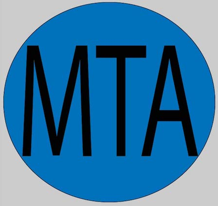
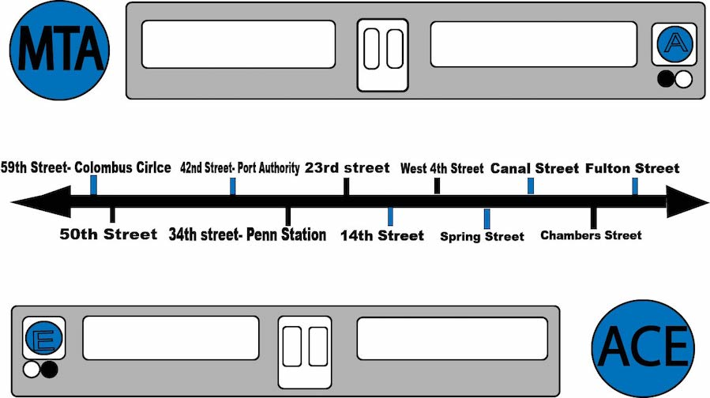
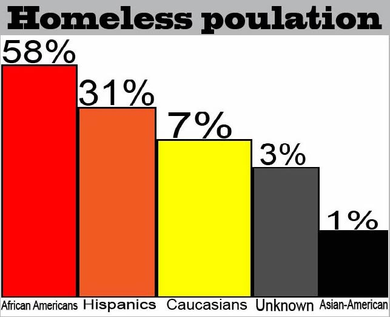

Links
Links
New york state is the largest state in the united states. New York even ranks in the top 30 of the largest states in the world.
With almost half of it's residents residing in New York City. This mass population of people makes for a serious housing issue.
The lack of affordable housing around the city has left many families, veterans and children homeless.
Homelessness is a social issue that effects everyone in society wheter we like it or not.
It affects us all beacuse we are constanlty interacting with the homeless both directly and indirectly.
Many homneles people are forced to live on the streets on NYC becaue of the lack of available beds in the cities shelters.
Despite stereotypes anyone can become homeless. Like this veteran I photographed near 42nd street, Bryant Park.

There are many problems homeless people face. Like poor living conditions in local shelters.
Which force some homeless individulas to the resort of sleeping on the MTA to even these conditions.

I have perosonally witnessed the homeless sleeping in. the back of subway cars while commuting on the MTA.
This is very problematic because it demnonstrates New York's blatant lack of accountabilty and solution for this social issue.
It also is both dangerous and inconvient for MTA riders who commute to work and are exposed to these types of siuations daily.

Times square 42nd street is one of New York Citys most popular areas. It also houses a large homeless population that are often ignored.
They migrate to these popular areas where they pick a spot and sit there all day with a sign.

This is the unglamourous side of New York City that the media does not show you about New York.
The truth is housing is a huge problem for most people living in New York City right now.
Yet it is still unadressed and contributes to the annual homelessness growth rate.
Although anyone of any race can become homeless. Mostly minorities are affected by it.
Minorities make up more than half of New York Citys homeless population.

Research supports the posotive corelation of linking individulas with mental health issues.
To people who have been exposed to homelessness.
These people are more likey to develop a mental health disorder.

Some homeless individuals are homeless solely beacuse of their mental health issues.
Many of New York's homeless population suffer from undiagnosed mental illnesses.
The lack of treament causes them to not be able to function in society.
These people often become severely disturbed.
Spending most of their lives living on the streets of NYC.
Not only are the homeless people facing mental health issues but, they are often at higher risk to develop serious drug addictions.
Some homeless youth and adults are using drugs as coping mechanisms.
A few common store bought drugs that homeless people have access to are beer, alcohol and cigarettes.
There is also an illegal market of hard drugs that homeless people are able to gain access to as well.
These are known as hardcore drugs. Like crack, cocaine, heroine and crystal meth.

Find out how you can donate or volunteer on the next page.
(c) Photos: Shaquille Cooper, 2018, All Rights reserved.